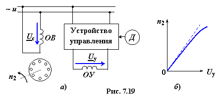
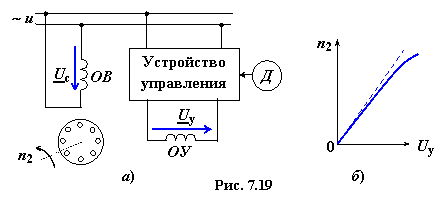

Асинхронные исполнительные двигатели (АИД) − двухфазные АД с короткозамкнутым ротором, которые преобразуют подводимое к ним напряжение сигнала в механическое вращение вала.
На статоре размещают две обмотки под углом 90° друг относительно друга: основную обмотку возбуждения ОВ, питаемую неизменным переменным напряжением Uc сети, и обмотку управления ОУ, напряжение питания Uy которой вырабатывается посредством устройства управления в зависимости, например, от величины сигнала датчика Д (рис. 7.19а). Для уменьшения инерции ротор обычно выполняют полым (в виде стакана) из неферромагнитного материала (например, из алюминия).


В зависимости от получаемого сигнала с датчика Д напряжение Uy изменяется или по величине (амплитудное управление), или по фазе (фазовое управление), или по фазе и по уровню одновременно. При этом меняется форма результирующего магнитного поля АИД, которое также условно разлагают на два круговых поля, вращающихся в противоположных
направлениях. Магнитное поле, вращающееся в обратном направлении, оказывает тормозящее действие на ротор, частота вращения n2 которого изменяется пропорционально величине этого момента. В результате получают практически линейную характеристику n2 = f(Uy) на определённом участке изменения напряжения Uy (рис 7.19б).